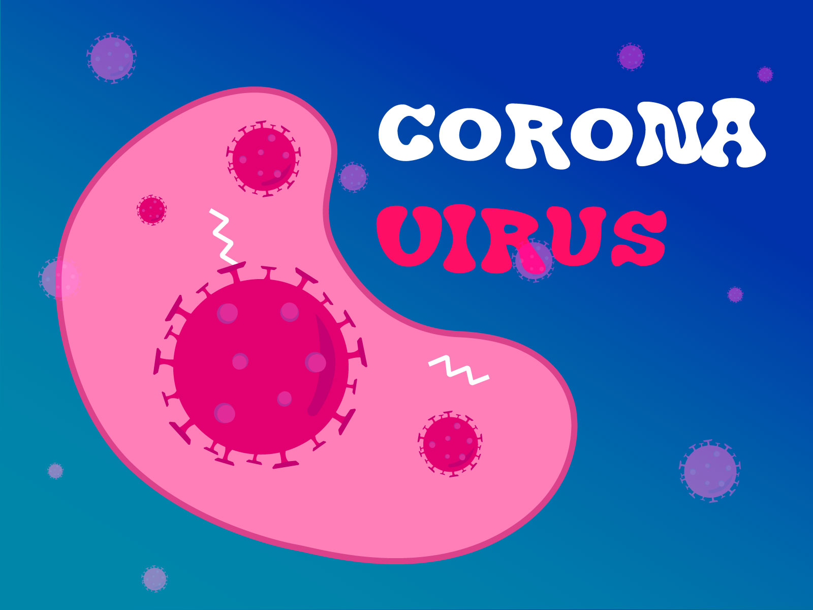

Información clara y verificada sobre el COVID-19 — qué es, cómo se transmite, los síntomas que debes vigilar y los pasos simples que mantienen a salvo a tu comunidad.
Revisado con guías de la OMS y salud nacional

Respiración
Monitorea diario
Vacuna
Mantente al día
R₀ · Transmisión
2.5
promedio respiratorio
Incubación
2–14 días
Vía principal
Gotas aéreas
Prevención
Vacuna + higiene
Desde el brote de 2019, el SARS-CoV-2 ha desarrollado múltiples variantes. Entender su biología nos ayuda a anticipar sus efectos.
El COVID-19 es una enfermedad infecciosa causada por el coronavirus SARS-CoV-2. Se transmite principalmente a través de gotículas respiratorias cuando una persona infectada habla, tose o estornuda.
Los síntomas aparecen entre 2 y 14 días después de la exposición. El período más común es de 5 días.
Una persona infectada puede contagiar en promedio a 2–3 personas sin medidas de protección.
La gran mayoría de los casos son leves o moderados. Las vacunas reducen drásticamente el riesgo de enfermedad grave.
Los síntomas pueden aparecer entre 2 y 14 días tras la exposición al virus. Algunos casos son asintomáticos.
Temperatura ≥ 38°C. Uno de los síntomas más comunes y tempranos.
Tos persistente sin flema. Puede causar irritación en la garganta.
Anosmia o pérdida repentina del olfato y/o gusto, sin congestión nasal.
Sensación de presión o dolor en el pecho. Requiere atención médica.
Falta de aire o sensación de ahogo. Síntoma grave que requiere atención urgente.
Cefalea intensa frecuente, a veces acompañada de fatiga muscular.
Cansancio inusual que no mejora con el descanso. Puede ser prolongado (long COVID).
Náuseas, diarrea o vómitos. Presentes especialmente en niños y adultos mayores.
Dificultad para respirar severa · Dolor de pecho persistente · Confusión o desorientación · Cianosis (labios o cara azulados) · Incapacidad para despertar o mantenerse despierto
Acciones simples y comprobadas que reducen significativamente tu riesgo y el de quienes te rodean.
Las vacunas aprobadas reducen en un 85–95% el riesgo de hospitalización y muerte. Consulta el calendario de refuerzos con tu médico.
Las mascarillas N95 o KN95 ofrecen la mejor protección en espacios con poca ventilación o alta concurrencia de personas.
Al menos 20 segundos con agua y jabón, o gel con al menos 60% de alcohol. Especialmente antes de tocarte la cara.
Abre ventanas o usa purificadores de aire HEPA. El virus se acumula en ambientes cerrados con mala circulación.
Si tienes síntomas o resultado positivo, quédate en casa al menos 5 días y evita el contacto con personas vulnerables.
Las pruebas de antígenos caseras están disponibles y son fáciles de usar. Consulta al médico ante cualquier resultado positivo.
Las vacunas disponibles han demostrado seguridad y eficacia a través de miles de estudios clínicos.
Las vacunas de ARNm redujeron significativamente los ingresos hospitalarios en poblaciones vacunadas.
Más de 13 mil millones de dosis administradas globalmente con un perfil de seguridad sólido.
Según estudios independientes, la vacunación evitó millones de muertes en los primeros dos años.
El "COVID largo" se refiere a síntomas que permanecen más de 12 semanas después de la infección inicial, afectando a entre el 10–30% de los pacientes.
Fatiga crónica y niebla mental (brain fog)
Dificultad para respirar después del esfuerzo
Dolor muscular y articular persistente
Problemas del sueño, ansiedad y depresión
Palpitaciones o taquicardia sin causa evidente
Personas afectadas
1 de cada 5
adultos recuperados reportan síntomas persistentes a los 4 semanas.
Duración promedio
3–6 meses
con variabilidad individual
Reducción
50%
con vacunación previa
💡 Consejo
Si sospechas que tienes COVID largo, busca atención médica especializada. Existen clínicas y protocolos de recuperación dedicados.